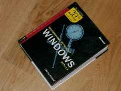

25 Nov 2002
25 Nov 2002
First Posted

Book Review: Programming Windows With C#
In which Charles Petzold updates his classic work "Programming Windows" to move on from API coding to using .NET and, in particular, the C# language. An excellent reference to Windows programming using the .NET framework, this is a comprehensive and thorough work with simple but informative samples although perhaps a little lacking in visual sparkle.
Obviously
Having met up with the only people I'd managed to arrange to see in a measly couple of meetings on a sunny July morning in New York, I thought it would be better to spend the rest of the day doing something more productive, and is often the way that was shopping. Leaving the computer logged on, and my jacket notably at the desk I'd blagged on arrival, I skipped out of the office and headed for the shops. I ended up with a bag full of clothes, magazines and books, one of which was this one.
I was interested to see this book because Petzold's earlier work, "Programming Windows" is regarded as something of a classic work on programming Windows using the API. Wondering cynically whether Microsoft had simply bought the author regardless of his interest in the subject and coerced him at money-point to write something about their new-fangled .NET product, I dived in. Well, actually, I didn't, I left it on my bookshelf where I hoped its content would osmotically seep into my head like I normally do, then three months later whilst playing with ICSharpCode's wonderful freeware C# IDE I found I actually needed a little help and picked it up.
Erm, Onto The Book
Regardless of whether my cynicism was founded, the book {to be completed}.
Impressions
This is a solid reference with very well thought out code that makes sure you get the basics right when writing an application or control. Particular attention is paid to things that sometimes get missed such as printing properly and drag and drop.
I don't have any real critisms of the book, only some gripes which either don't really apply or are frankly petty. Firstly, I really wanted to see how the C# code related to the actual Win32 API code, particularly where in GDI+ the .NET framework obviously shadows the API and sometimes can interoperate with the same handles. But the author makes it clear in the introduction that this book is not about the these old-fangled ways of programming, and whole-heartedly adopts the .NET framework almost throughout (except in a small number of cases, where the Framework is missing something obvious, such as in the scrolling sample). Secondly, whoever created the images which head the chapters should have Photoshop removed from them, using violence if necessary. The typesetting could barely be more tedious if it tried, although it is better than most of the efforts from Wrox Press, some of which appear to been typeset by a baboon using an early model dot-matrix printer. Finally, there's nothing in the least bit fancy - no XP Visual Styles, no Common Controls, no super toolbar menus. This is either a consequence of it being written so far in advance of that XP hadn't been invented (most of the samples are dated 2001) or an admirable attempt to be consistent with the .NET Framework itself, which appears to believe that these things don't exist either.